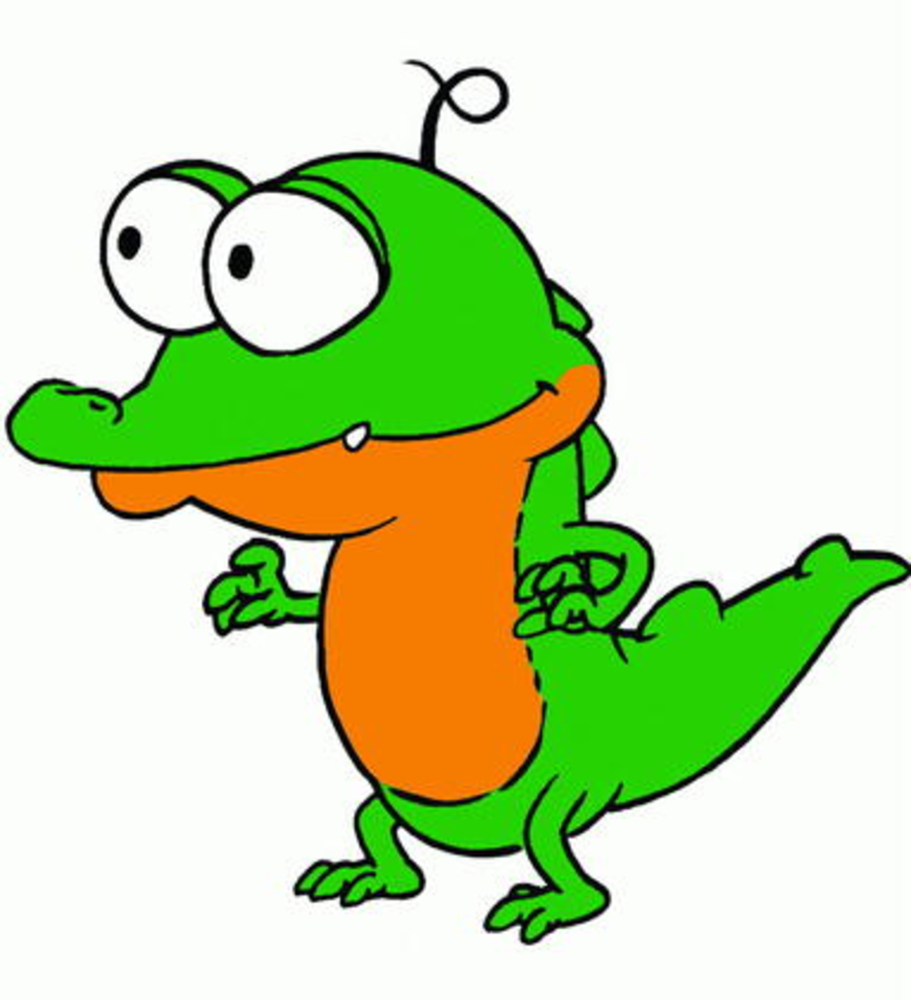

Willkommen im Tierpark Ferdi-Fuchs!
| Tierinfos | |||||
|---|---|---|---|---|---|
| Tier | Vegetarier | Gattung | Lebensraum | Patenschaft | Name |
| Maulwurf | Nein | Eurasische Maulwürfe | unterirdische Gangsysteme | Ja | Mulli |
| Wal | Nein | Säugetier | Meer | Nein | |
| Flamingos | Nein | Phoenicopterus | tropisch-warmen Regionen | Ja | Mango |
| Kolibris | Ja | Seglervogel | Nord- und Südamerika | Ja | Kliri |
| Chamäleons | Nein | Schuppenkriechtiere | bewaldete Gebiete in warmen Regionen | Nein | |
| Krokodile | Nein | Crocodylus | Bachläufen und im Unterholz | Ja | Schnappi |
| Seekatzen Fasanbutt |
Nein | Holocephali | Weltmeeren | Nein | |
| Nein | Bothidae | küstennahen Sandböden | Nein | ||
Das Krokodil Schnappi
Das Krokodil Schnappi wurde von der kleinen Fiona als Patentier ausgesucht, da Sie findet es kann gut singen und tanzen.
